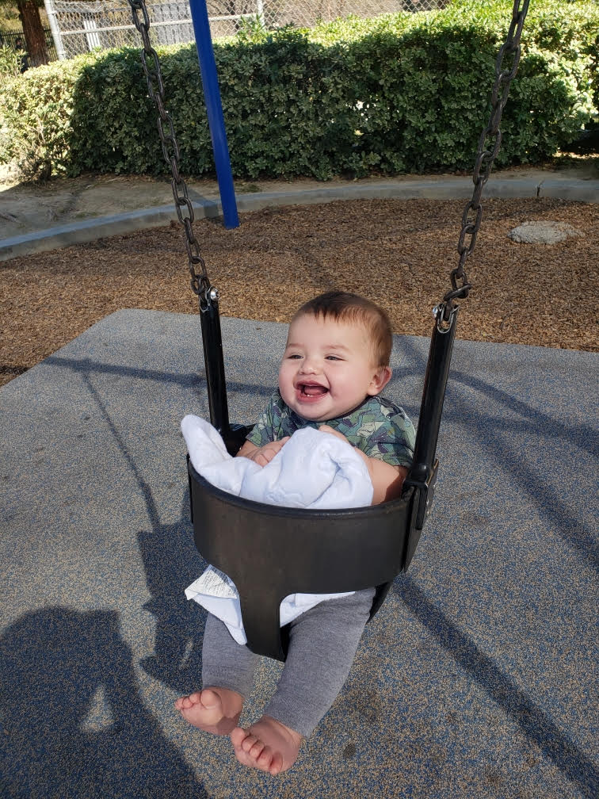

Scroll down to see the sticky effect.
my name is stevie, and during the pandemic,i got pregnant and became a single mom. i decided to change my career for my son. ive been doing makeup for three-four years now! i like the colors black,pink,and red.im a traditional goth,and i have a puppy named cameron. I did coding classes for my small business but now i just love to code. heres my other website thats about my cosmetology !
https://annieanita.github.io/cosmotlogy-protoflio/ 